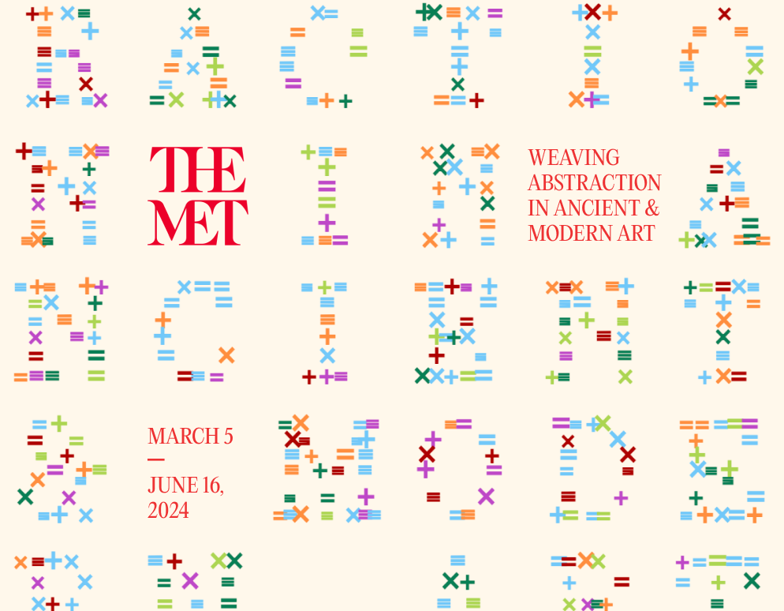

HOME BOOK 2023
[print design, typography, bookbinding]
8 x 10 in
A 20-page book about home, using the content of a box mailed to me from back home in India. Designed in the form of an inventory, each item appears as through being scanned through a baggage scanner, accompanied by personalized texts and information.
A 20-page book about home, using the content of a box mailed to me from back home in India. Designed in the form of an inventory, each item appears as through being scanned through a baggage scanner, accompanied by personalized texts and information.
CHAMBERLAIN COFFEE DATA-DRIVEN PACKAGING 2024
[creative coding, package design, web design, branding]
Make your own Blend! ↗
An automated packaging system for visualizing both definite and sensory data for Chamberlain Coffee blends. Data corresponding to the predefined fields is inputted into a Google Sheets document, which determines the visuals of the newest flavor’s packaging. This data-driven design is instantly generated and added to a live website of the blends collection.
An automated packaging system for visualizing both definite and sensory data for Chamberlain Coffee blends. Data corresponding to the predefined fields is inputted into a Google Sheets document, which determines the visuals of the newest flavor’s packaging. This data-driven design is instantly generated and added to a live website of the blends collection.
STARDEW TYPEFACE 2024
[type design, creative coding, web design]

Try it Out! ↗
Stardew is a pixel-based, grid-based, variable display serif made using Glyphs. The typeface comes with different weights & widths and uses a flower-like pixel to form its characters. Born from a curiosity about combining traditional design with technology, Stardew creates a playful interaction between pixel & serif typography. (ongoing!)
Stardew is a pixel-based, grid-based, variable display serif made using Glyphs. The typeface comes with different weights & widths and uses a flower-like pixel to form its characters. Born from a curiosity about combining traditional design with technology, Stardew creates a playful interaction between pixel & serif typography. (ongoing!)
BLUMENHAUS LOGO REDESIGN 2024
[creative coding, typography, illustration, branding]

See it Blooming Live! ↗
Blumenhaus Magazine is an annual botanical magazine from France. It focuses just as much on the aesthetic side as it does on its written content – described as "a luxurious hybrid of an art book & a magazine." I redesigned/enhanced the logo to evolve with time, reflecting everchanging nature. Using code and data connected to two APIs – Garden API & Weather API – different illustrated flowers bloom every day according to the current season, humidity, and wind speed.
Blumenhaus Magazine is an annual botanical magazine from France. It focuses just as much on the aesthetic side as it does on its written content – described as "a luxurious hybrid of an art book & a magazine." I redesigned/enhanced the logo to evolve with time, reflecting everchanging nature. Using code and data connected to two APIs – Garden API & Weather API – different illustrated flowers bloom every day according to the current season, humidity, and wind speed.
COMMUNITY DRIVEN DESIGN2024
[creative coding, type design, branding, web design, exhibition design]



Add your Weave! ↗
Weaving Abstraction in Ancient and Modern Art is an exhibition at the Met displaying textiles spanning not only centuries, but continents. The unique textiles are brought together through the use of similar colors, materials, grids, and techniques. By identifying the fundamental form of patterns & shapes in weaving and translating them into ASCII symbols, a custom type has been designed through code. Visitors of the exhibition or website would be prompted to add their own data-driven symbol to the communal weave, leaving their mark on the typography.
Weaving Abstraction in Ancient and Modern Art is an exhibition at the Met displaying textiles spanning not only centuries, but continents. The unique textiles are brought together through the use of similar colors, materials, grids, and techniques. By identifying the fundamental form of patterns & shapes in weaving and translating them into ASCII symbols, a custom type has been designed through code. Visitors of the exhibition or website would be prompted to add their own data-driven symbol to the communal weave, leaving their mark on the typography.
EXPLORING ESCAPISM PT. 1 – The MacBOOK 2023
[print design, creative coding, web design, bookbinding]

Visit the Website ↗
This laptop-sized book is meant to explore escapism in a digital setting and simulate the act of being immersed on the web through "tabs", emojis, and other techniques. Inspired by Reddit, I created an internet-driven experience which allows you to escape your reality by browsing other people’s realities. The website documented throughout the book is fully functional & coded by me.
This laptop-sized book is meant to explore escapism in a digital setting and simulate the act of being immersed on the web through "tabs", emojis, and other techniques. Inspired by Reddit, I created an internet-driven experience which allows you to escape your reality by browsing other people’s realities. The website documented throughout the book is fully functional & coded by me.
EXPLORING ESCAPISM PT. 2 – Touch Some Grass! 2023
[creative coding, web design, print design, typography]


Touch Some Grass! ↗
This interactive digital book is meant to explore escapism in a physical setting and is a strong constrast to the busy MacBook. It is meant to simulate the tangible feeling of sitting outside in NYC and flipping through a real book. This website allows the user to enjoy a rejuvenating, nature-driven experience to escape the overconsumption of technology. The contents of book itself encourage the reader/user to get off the web.
This interactive digital book is meant to explore escapism in a physical setting and is a strong constrast to the busy MacBook. It is meant to simulate the tangible feeling of sitting outside in NYC and flipping through a real book. This website allows the user to enjoy a rejuvenating, nature-driven experience to escape the overconsumption of technology. The contents of book itself encourage the reader/user to get off the web.